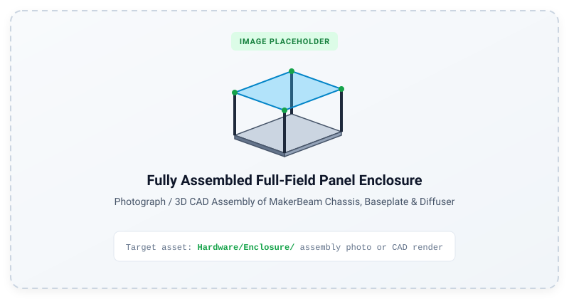
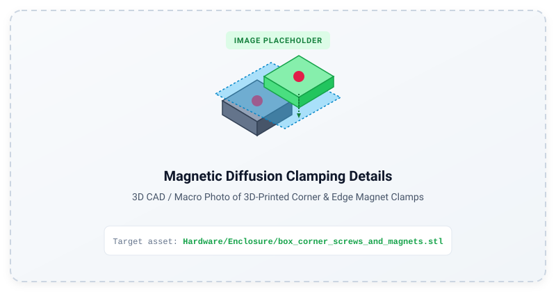

Full-Field Panel Enclosure & Optics
The full-field visual stimulator utilizes a modular MakerBeam XL frame, precision aluminium baseplates, and 3D printed magnetic diffusion clamps to achieve spatial uniformity and fast optical filter/diffuser swapping.
Mechanical Assembly
flowchart TD
subgraph Structure["1. Structural Chassis & Heat Dissipation"]
direction LR
Frame["<b>MakerBeam XL Frame</b>"]
Baseplate["<b>Aluminium Baseplate</b>"]
PCBs["<b>LED Array PCBs</b>"]
Frame --> Baseplate --> PCBs
end
subgraph Optical["2. Optical Diffusion Stack"]
direction LR
DiffBase["<b>Magnetic Diffusion Base</b>"]
Film["<b>Diffusion Film / Filters</b>"]
Clamp["<b>Magnetic Top Clamp</b>"]
DiffBase --> Film --> Clamp
end
Structure ==> Optical
Figure: Fully assembled panel enclosure showing MakerBeam XL framework, CNC aluminium baseplate, mounted LED PCBs, and top magnetic diffuser.1. Frame & Baseplate
- CAD Models:
Hardware/Enclosure/ Baseplate_for_PCBs_v3.stp/.ipt— Master baseplate CAD for CNC milling or laser cutting.Baseplate_for_PCBs_v3_section.stl— 3D printable test section.- Extrusions: 15x15mm MakerBeam XL beams (200mm and 50mm lengths) connected via black anodized corner cubes and M3 button-head socket screws.
- Thermal Management: The aluminium baseplate serves as an effective heat sink for the LED arrays and driver circuitry.
2. Magnetic Diffusion Clamping System
To allow rapid changing of diffusion sheets, neutral density filters, or spectral filters without disassembling the chassis:

Figure: Detail view of 3D-printed magnetic corner and long-edge clamping elements holding the optical diffusion sheet.- Corner Elements:
- Base:
box_corner_screws_and_magnets.stl(Fastens to the MakerBeam frame with M3 hardware and houses 5mm neodymium magnets). - Clamp:
box_corner_just_magnets.stl(Snaps on top to secure the diffusion sheet). - Long Edge Elements:
- Base:
box_long_edge_screws_and_magnets.stl - Clamp:
box_long_edge_just_magnets.stl - Batch Print Package:
UM3_all3dprintedparts.3mf(UltiMaker / Prusa / Bambu 3MF package containing the complete print set).
3. Optical Considerations
- Diffusion Distance: The distance between the LED PCB plane and the diffusion sheet is set by the 50mm vertical MakerBeam extrusion. This was the minimum for sufficient spatial homogenisation of light.
- Diffuser Stacking: Multiple diffusers can be stacked to produce more homogenised light.
- Filter Stacking: Optical diffusers (e.g. holographic or engineered diffusers) can be paired with neutral density filters to extend the dynamic range into scotopic regimes, instead/as well as using the trimpots.